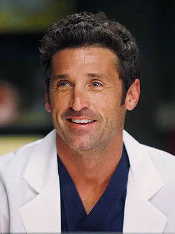

Derek Shepherd
Derek Shepherd, played by Patrick Dempsey, was the head neurosurgeon at Grey Sloan Memorial Hospital in seasons 1-11. He quickly becomes a fan favorite character -due to his charming looks- amongst fans.
Derek is a very talented and well respected surgeon in the show. His character is kind and compassionate to most of the people around him. Derek was best friends with Mark Sloan, another cast member featured on this website. Derek has the nickname McDreamy, which sticks throughout his entire career. Within the show, Derek has quite the number of girlfriends and wifes. Although his character develops a lot of relationships, he ends up marrying the main character of the show, Meridith Grey.
Derek and Meridith were the "great love story" of the entire show. A lot of people adored their fictional relationship; however, there were a lot of speculations that the actors of Derek and Meridith were involved in real life as well. None of those rumors have ever been confirmed.
Derek is a staple to the entire cast. His looks along with his personality drove Grey's fans to adore his character and him outside of the show as well. As of now, Patrick is happily married with a wife and daughter. He is very involved and respected in the car racing community. He also just won the People's Magazine "Sexiest Man of the Year" award. Patrick made an appearance on a later Greys episode that dealt with Meridith's near death experience. Derek was in Grey's afterlife, and helped her head back to the "real world". Fans adored his reappearance when Meridith was very close to death and still supports the show's continuing seasons to this day.